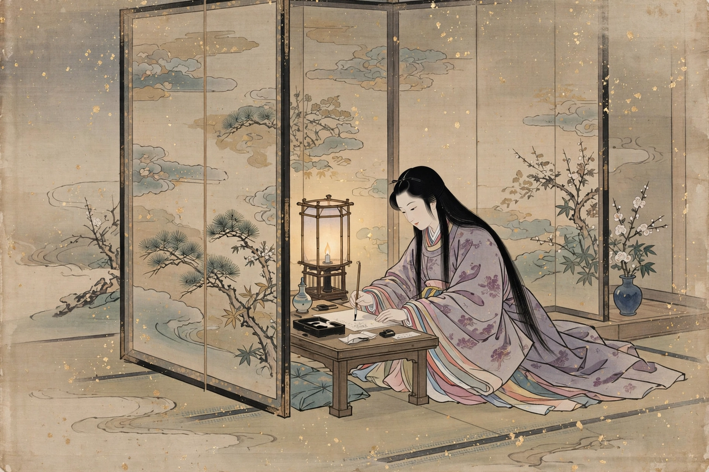

From Wikipedia, the free encyclopedia
| The Pillow Book | |
|---|---|
 | |
| Author | Sei Shōnagon |
| Original title | 枕草子 (Makura no Sōshi) |
| Written | c. 1002 (Heian period) |
| Genre | Zuihitsu (miscellaneous essays, lists, diary) |
| Language | Classical Japanese |
The Pillow Book (枕草子, Makura no Sōshi) is a book of observations and musings recorded by Sei Shōnagon during her time as court lady to Empress Consort Teishi during the 990s and early 1000s in Heian-period Japan. Completed around 1002, it is one of the masterpieces of classical Japanese literature and a founding work of the zuihitsu ("follow the brush") genre.
The work is a miscellany of some three hundred short pieces: lists ("Things that make one nervous", "Hateful things", "Elegant things"), anecdotes of court life, poems, character sketches, and the famous opening passage beginning "In spring it is the dawn..." (haru wa akebono). Its tone is witty, sharp-eyed and often cutting; Sei Shōnagon's judgments of taste and her delight in cleverness define the aesthetic ideal of okashi — that which is charming or delightful.
"In spring it is the dawn that is most beautiful. As the light creeps over the hills, their outlines are dyed a faint red..."
Sei Shōnagon served at the salon of Empress Teishi, rival to the salon of Empress Shōshi, where Murasaki Shikibu wrote The Tale of Genji. The two works together dominate Heian prose. The Pillow Book survives in several textual lineages and has been translated into English notably by Arthur Waley (abridged, 1928), Ivan Morris (1967) and Meredith McKinney (2006). Peter Greenaway's 1996 film The Pillow Book took its title and inspiration from the work.
See also: The Tale of Genji · Natsume Sōseki · Heian period